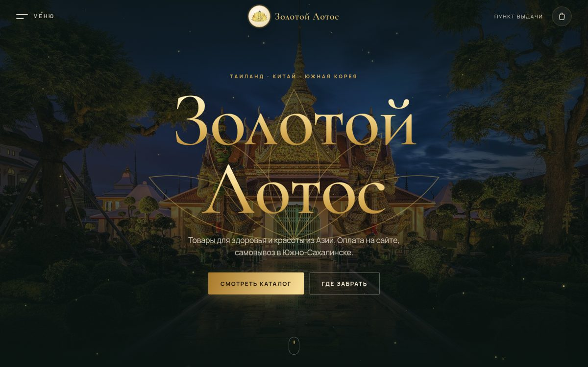
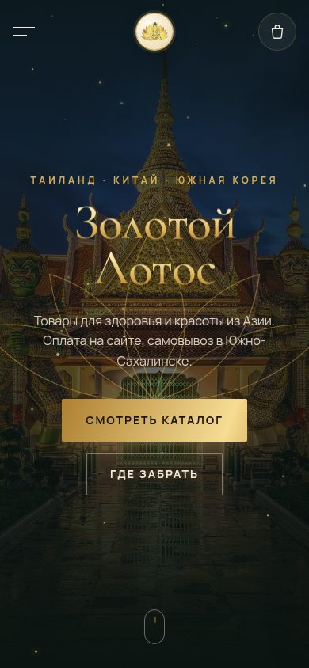
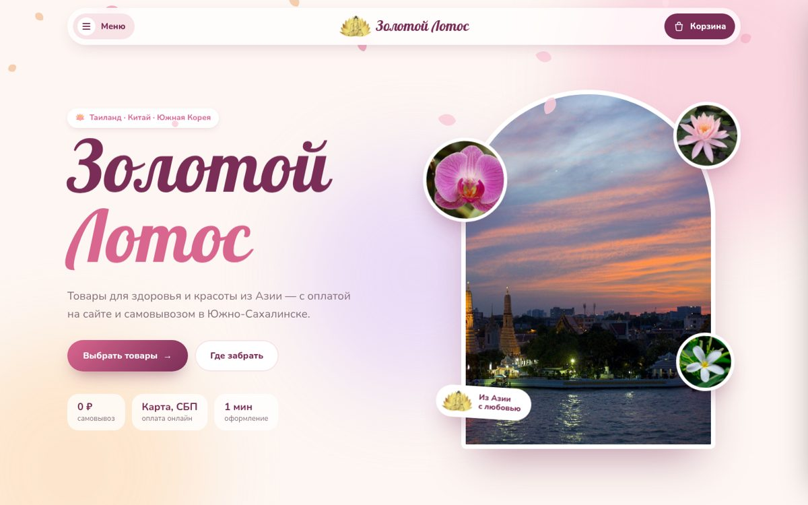
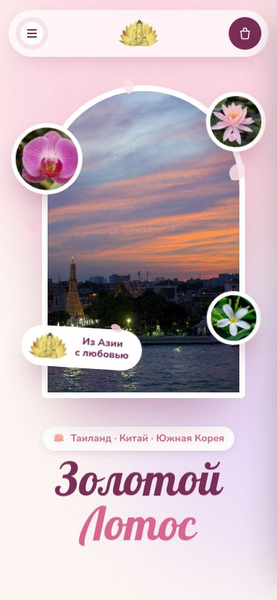
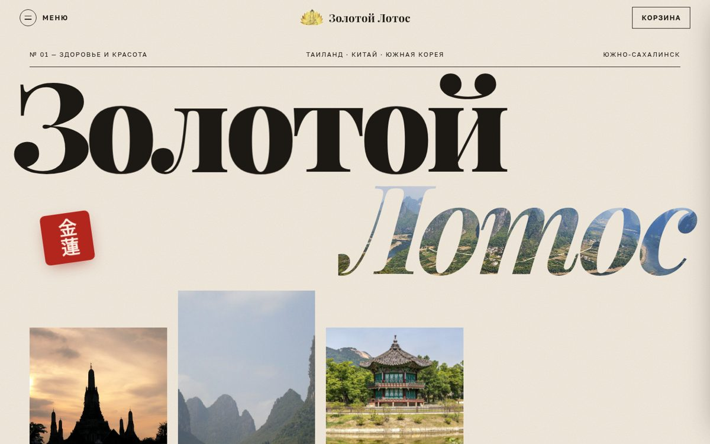
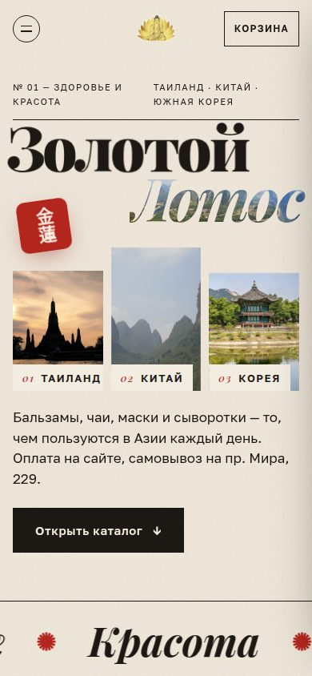
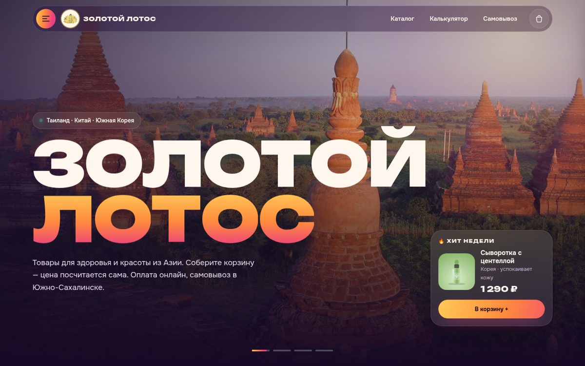
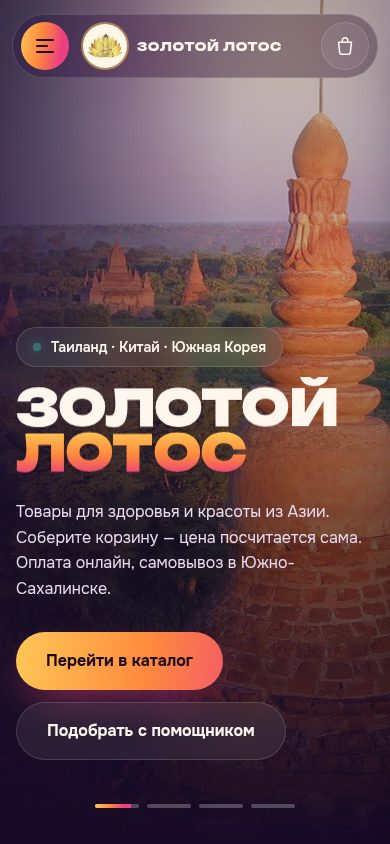
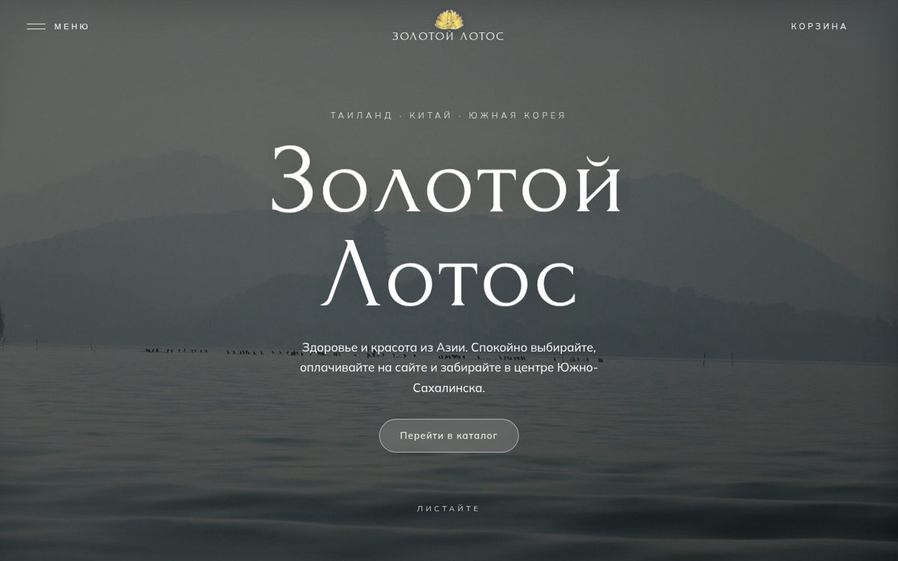
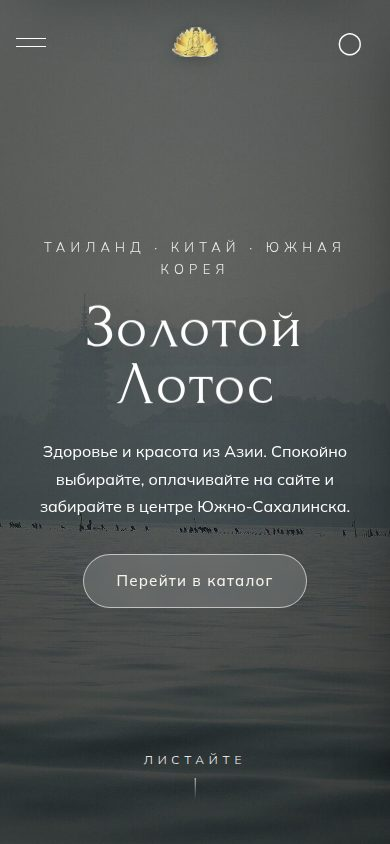

Вариант 01
Золотой храм
Тёмный изумруд и золото, как вечерний храм Ват Арун. Дорого и спокойно. Подходит, если хочется показать товары как премиальные.
Открыть вариант →Интернет-магазин · Южно-Сахалинск
Главная страница с каталогом, корзиной-калькулятором, онлайн-оплатой и ботом-помощником. Откройте каждый вариант, полистайте, положите товары в корзину и выберите тот, что больше нравится.


Тёмный изумруд и золото, как вечерний храм Ват Арун. Дорого и спокойно. Подходит, если хочется показать товары как премиальные.
Открыть вариант →

Светлый и нежный: пастель, орхидеи, падающие лепестки. Шрифт Паттайя, как вы и хотели. Ближе всего к стилю корейской косметики — дружелюбно и понятно.
Открыть вариант →

Как журнал о путешествиях: крупные буквы, красная печать 金蓮 («золотой лотос»), горизонтальная прогулка по трём странам. Калькулятор оформлен в виде кассового чека.
Открыть вариант →

Ярко и современно: слайд-шоу пейзажей, градиент заката, стеклянные карточки, «Хит недели» на первом экране. Больше всего «вау» на телефоне.
Открыть вариант →

Тишина и туман: пагода над озером, песочные и шалфейные тона, много воздуха. Первый экран раскрывается кругом, а при скролле сжимается в арку.
Открыть вариант →